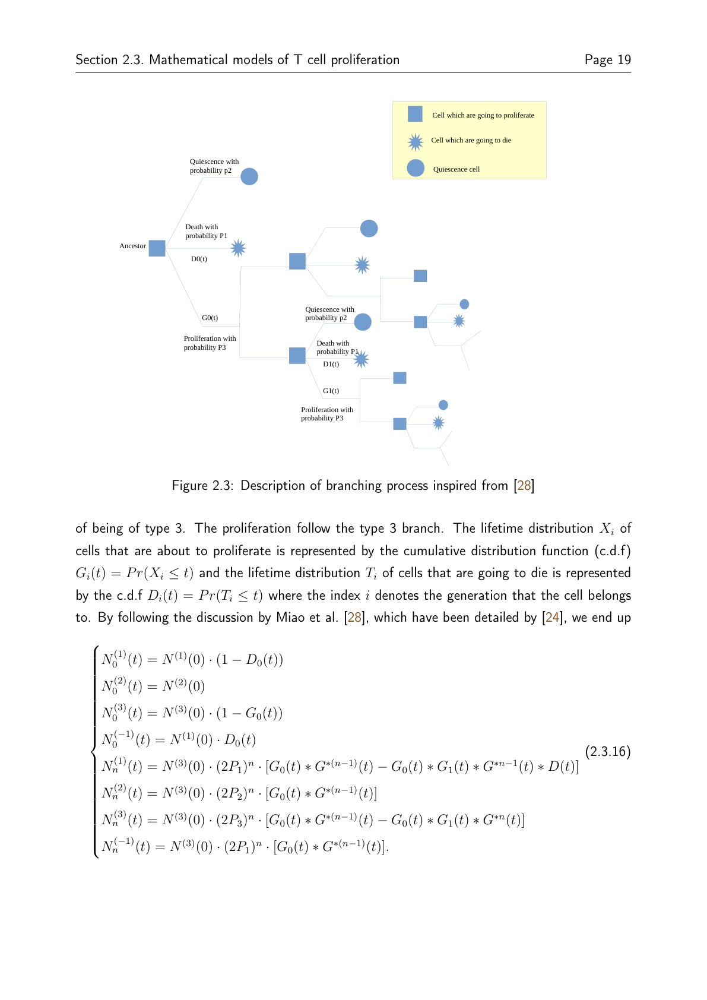

Projects as evidence, not decoration.
Each project is grouped by the kind of problem it demonstrates: tool building, plant adaptation, metabolism, immune dynamics, and transferable computational methods.
Theme 1 — Scientific software & interactive tools
Proof that the modelling work can be translated into usable technical systems.

Foko Lab / Chilperic ODE
Interactive browser environment for deterministic ODEs, stochastic simulations, optimisation, steady-state analysis, model atlases, and reproducible exports.
Deutsch-WiPA 2026
Browser-based German B1–B2 learning tool with grammar, vocabulary, conjugation practice, feedback loops, and error tracking.
Theme 2 — Photosynthesis, climate, and plant adaptation
Postdoctoral work on first-principles modelling of C3–C4 adaptation under environmental constraints.

Photosynthesis Climate Adaptation Model
Mechanistic thermo-hydraulic-biochemical modelling framework linking heat balance, hydraulics, biochemical assimilation, soil/environmental forcing, sensitivity analysis, and optimisation.
Why this matters
This theme makes your profile broader than metabolism: it connects biochemistry, physics, environmental constraints, optimisation, and crop-relevant adaptation. It is the clearest bridge to industry roles in modelling, sustainability, agri-tech, QSP-style simulation thinking, and computational biology.
Theme 3 — Metabolism and fatty-acid dynamics
PhD and publication-level work around hepatic fatty-acid metabolism, de novo synthesis, enzyme kinetics, and metabolic switching.

Fatty-acid metabolism bistability
Coarse-grained ODE model linking acetyl-CoA, malonyl-CoA, fatty acids, and triglycerides to study qualitative switching between fed and fasted states.

Fatty-acid de novo synthesis model
Semi-mechanistic model of fatty-acid elongation, substrate use, and production of myristic, palmitic, and stearic acid.
Published metabolism papers
First-author fatty-acid kinetic data paper and co-authored differentiable constraint-based modelling work.
Theme 4 — Immune-cell stochastic dynamics
Master-level and follow-up modelling work on T-cell proliferation using stochastic processes and data-fitting frameworks.

T-cell proliferation models
Stochastic master equation framework for quiescent and activated T-cell generations with activation, proliferation, and death events.

Mathematical models of T-cell proliferation
Master thesis on CFSE data, Smith–Martin models, Cyton models, branching processes, stochastic master equations, and negative-binomial likelihood framing.
Theme 5 — Growth mechanics and metabolic oscillations
Work connecting cellular growth, metabolic organisation, and oscillatory dynamics in growing cells.
Growth Mechanics and the Emergence of Metabolic Oscillations in Growing Cells
bioRxiv preprint with H. Dourado, W. Liebermeister, and M. J. Lercher on how growth mechanics can shape metabolic oscillations in growing cells.
Why this theme belongs here
This work broadens the portfolio from specific biological applications toward general principles of dynamic biological organisation: growth, constraints, nonlinear response, and emergent oscillatory behaviour.